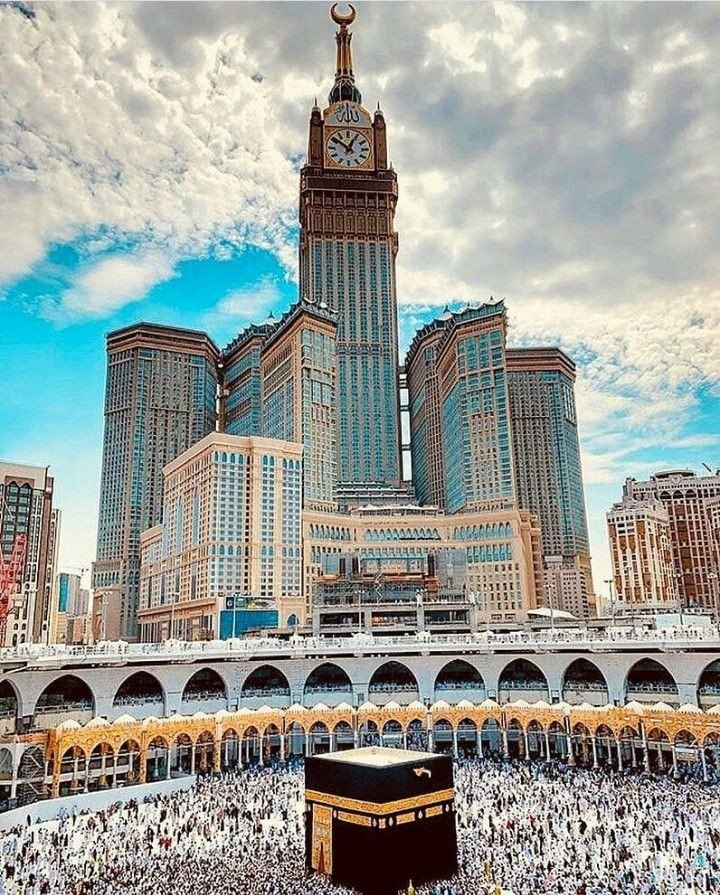

is a mosque that surrounds the Kaaba in Mecca, in the Makkah Province of Saudi Arabia. It is a site of pilgrimage in the Hajj, which every Muslim must do at least once in their lives if able, and is also the main phase for the ʿUmrah, the lesser pilgrimage that can be undertaken any time of the year.
is a government-owned complex of seven skyscraper hotels in Mecca,Saudi Arabia.These towers are a part of the King Abdulaziz Endowment Project that aims to modernize the city in catering to its pilgrims. The central hotel tower, the Makkah Royal Clock Tower, has the world's largest clock face and is the third-tallest building and fifth-tallest freestanding structure in the world. The clock tower contains the Clock Tower Museum that occupies the top four floors of the tower.
| وقت الصلاة | اسم الصلاة | |
|---|---|---|
| 05:11 AM | الفجر | -1 |
| 12:29 PM | الظهر | -2 |
| 03:53 PM | العصر | -3 |
| 06:31 PM | المغرب | -4 |
| 08:01 PM | العشاء | -5 |